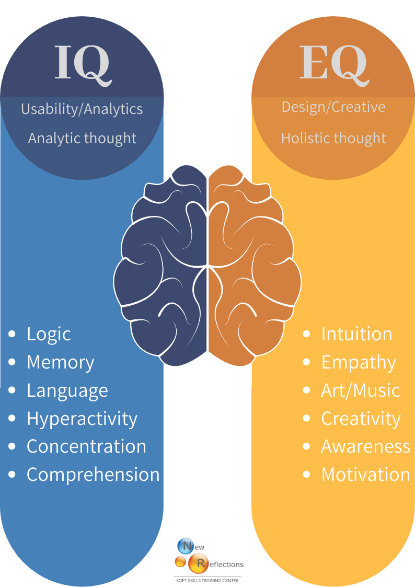

EQ and IQ
Emotional Intelligence:
Although deemed to be a fringe concept in the 90's. People now realise the important role it plays in future health and success.
People with good EQ tend to make better leaders and better team members as they are more aware of their own needs
and the needs of
others. It differs from traditional IQ greatly. It's sort of "Book Smarts" versus "Street Smarts". IQ is still important
with its emphasis
on quantative reasoning, Long and Short term memory and its general knowledge of the world, however EQ
is how you interact with the people around you which is paramount in a social species like ours.
Helpful Links Below:
Helpful Links Below:
VeryWellMind:ScienceDirect:
Self and Development Center: